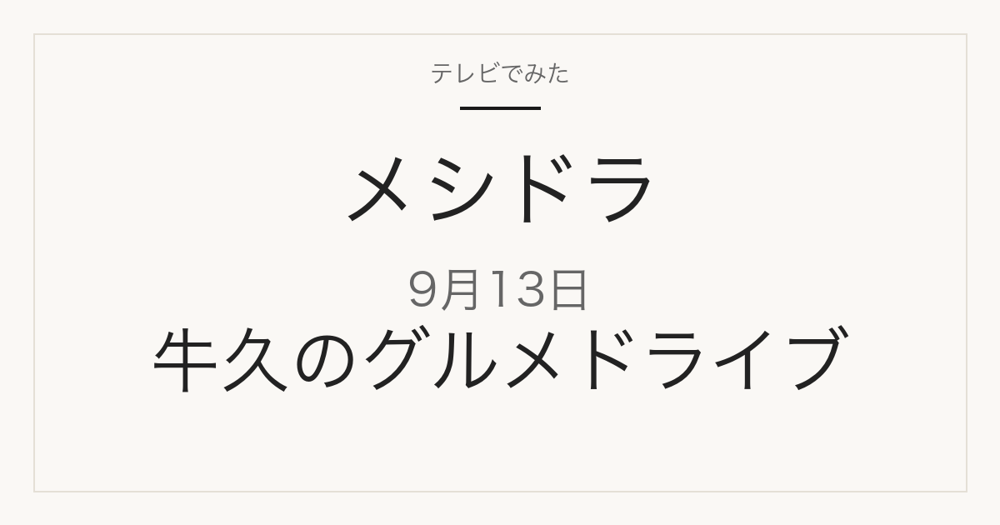

1. ガーデンカフェぬまもと
欧風カレー・ガーリックオイルスパゲティー
- 番組公式の紹介
- 14種類の紅茶やスイーツ、食事が楽しめる店。欧風カレーとガーリックオイルスパゲティーを食べています
テレビ紹介商品の記録メディア
この記事には広告・アフィリエイトリンクが含まれる場合があります。
2026年9月13日（日）放送
松村北斗・三浦友和と茨城県牛久市を回る男4人旅
番組公式の案内で、この回で訪ねる5か所の店名が分かっています。住所・営業時間・価格はまだ確認できていません。確認できたものから同じページに追記します。
訪問先5か所を見る
番組公式が案内する訪問先
放送前の案内
日本テレビの番組情報（日テレTOPICS、2026年9月13日5時公開）に、この回で訪ねる5か所が名前入りで載っています。これは放送前に出された案内で、放送で実際にどう紹介されたかを確認したものではありません。待ち合わせ場所は旧岡田小学校女化分校です。
欧風カレー・ガーリックオイルスパゲティー
作家ものの磁器・陶器
チーズバーガーコンボセット／ジャックニコルソン
エアホッケー
そばがき・おろしそば
店名と各店の内容は番組公式の案内によります。住所・営業時間・定休日は店舗公式で確認できたものだけを後から追記します。現時点では確認できていないため載せていません。
番組表の記載
この回は、松村北斗さんと三浦友和さんがレギュラーの兼近大樹さん・満島真之介さんと合流し、茨城県牛久市をドライブする男4人旅です。番組表には次の立ち寄り先が挙げられています。店名・住所・価格はいずれも番組表に記載がありません。
出典は2026年9月13日の日本テレビ番組表 21時枠（2026年9月13日確認）です。番組内容は変更になる場合があります。
出演
番組表によると、松村さんと三浦さんは親子役で共演した間柄です。車中では三浦さんと忌野清志郎さんが高校の同級生だった話や、SixTONESの命名にまつわる話も出る予定です。
舞台
茨城県の南部にある市です。牛久市公式サイトによると、人口は83,090人・39,445世帯（令和8年9月1日現在）。
街の説明は牛久市公式サイトと牛久市観光協会の記載によります。番組がどの店を訪ねるかは放送で確認します。
日テレTOPICS「松村北斗＆三浦友和 茨城県牛久市で貴重トーク連発のグルメドライブ！『メシドラ』SPに登場」（2026年9月13日5時公開・店名の出典）
2026年9月13日 日本テレビ番組表（Gガイド）の21時枠
日本テレビ「メシドラ ～兼近＆真之介のグルメドライブ～」番組公式
当サイトは番組公式サイトではありません。放送内容は変更になる場合があります。